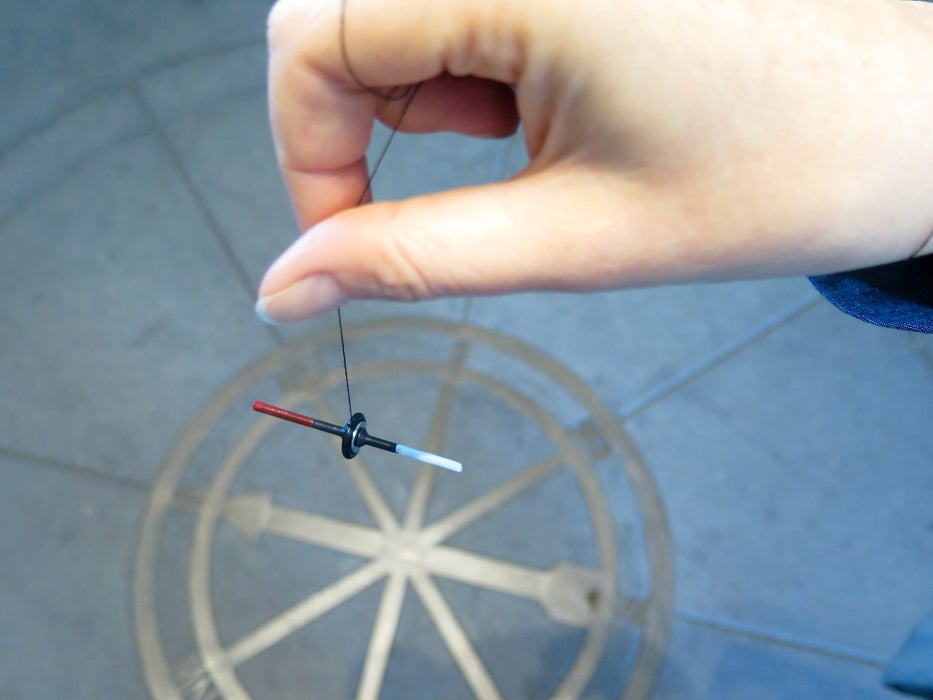

Adopting the physics and mechanisms that professionally built compasses use, we can easily make one at home--all that is needed is a magnet, a screw for the direction pointer, a thread for the needle to hang on, and a baseplate for the directional increments.
Visit the following link for a tutorial on how to make a hanging compass on your own :
Hanging Magnetic Compass